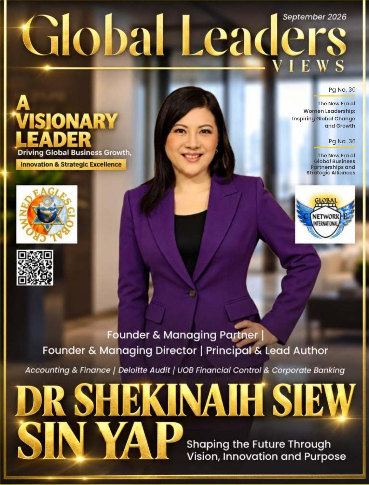
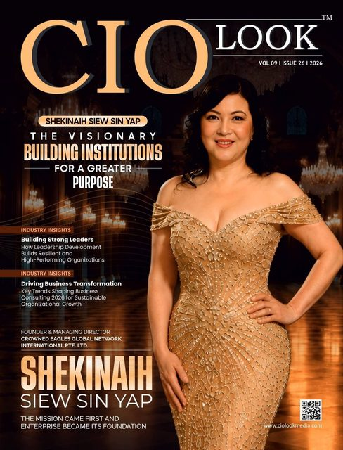
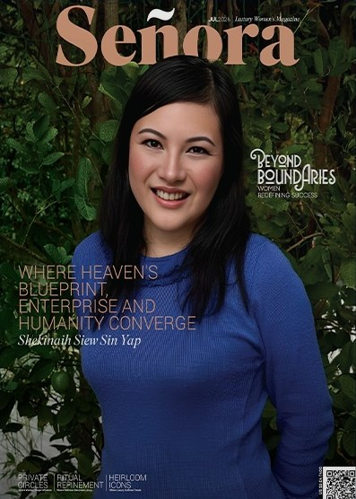

Magazine · Global Leaders Views · September 2026
Purpose Before Position, Instruction Before Expansion, Obedience Before Manifestation
Global Leaders Views put PROF. (HON.) DR. SHEKINAIH SIEW SIN YAP on its September 2026 cover as “A Visionary Leader Driving Global Business Growth, Innovation & Strategic Excellence”, with a cover story of nineteen sections and pages of portraits and quotations.
Read the magazine
A Visionary Leader · Global Leaders Views
Swipe or tap the edge of a page to turn it. Double-tap to zoom. Read text opens the words of the page in large print.

From the feature
In Their Words
“Enterprise is the instrument; the Seven Missions are the reason; restoration is the destination.”Global Leaders Views, September 2026
“The organisation does not create the mission. The mission determines what the organisation must become.”Global Leaders Views, September 2026
“Leadership is the courage to imagine more and the discipline to make it real.”Global Leaders Views, September 2026
The full text
The Edition, Word for Word
Every word of the cover, the editor's message, the contents and the cover story, page by page, as Global Leaders Views printed it.
Cover
September 2026
Global Leaders
VIEWS
A
VISIONARY
LEADER
Driving Global Business Growth,
Innovation & Strategic Excellence
Pg No. 30
The New Era of
Women Leadership:
Inspiring Global Change
and Growth
Pg No. 36
The New Era of
Global Business
Partnerships and
Strategic Alliances
Founder & Managing Partner |
Founder & Managing Director | Principal & Lead Author
Accounting & Finance | Deloitte Audit | UOB Financial Control & Corporate Banking
DR SHEKINAIH SIEW
SIN YAP
Shaping the Future Through
Vision, Innovation and Purpose
Page 5
Editor’s
MESSAGE
In a business environment where change has become the only constant, meaningful leadership is no longer defined simply by the ability to achieve results. It is reflected in the ability to see what lies ahead, make thoughtful decisions in moments of uncertainty and create opportunities that deliver lasting value. This edition brings that perspective to the forefront through the journey of DR SHEKINAIH SIEW SIN YAP.
“A Visionary Leader Driving Global Business Growth, Innovation & Strategic Excellence” explores the leadership philosophy, experiences and forward-looking perspective that have shaped professional journey. Her story offers a closer look at how strategic thinking, adaptability, innovation and a strong sense of purpose can come together to influence business growth and create meaningful impact.
What makes a leadership journey truly interesting is not only the milestones achieved, but also the thinking behind them. Every important decision comes with challenges, changing circumstances and opportunities to learn. approach reflects the importance of staying curious, understanding the bigger picture and continuously looking for better ways to create value. Her journey reminds us to DR SHEKINAIH’s hat sustainable growth is often built through a combination of clear vision, disciplined execution and the willingness to evolve.
This special edition is dedicated to that journey.
Through this cover story, we look beyond titles and achievements to explore the ideas and principles that continue to shape DR SHEKINAIH’s approach to leadership and business. From navigating transformation and embracing innovation to building strategies for long-term growth, the story offers an authentic perspective on what it means to lead with both ambition and purpose.
At the heart of this edition is a simple belief: the future is shaped by leaders who are willing to envision it, challenge convention and turn purpose into meaningful action.
With DR SHEKINAIH SIEW SIN YAP at the center of this edition, we invite readers to discover a leadership story defined by vision, innovation, strategic thinking and a commitment to shaping what comes next.
Shaping the Future Through Vision, Innovation and Purpose.
Lucas Whitman
Editor in Chief
Page 7
Leadership is not about being in charge.
It is about creating the conditions for
others to succeed.
Table of Contents
10
DR SHEKINAIH SIEW
SIN YAP ( Cover Story)
30
The New Era of Women
Leadership: Inspiring
Global Change and
Growth
36
The New Era of Global Business
Partnerships and Strategic
Alliances
Page 10
Cover Story
Page 11
Founder & Managing Partner |
Founder & Managing Director | Principal & Lead Author
Accounting & Finance | Deloitte Audit | UOB Financial Control & Corporate Banking
DR SHEKINAIH
SIEW
SIN YAP
PURPOSE BEFORE POSITION
INSTRUCTION BEFORE EXPANSION
OBEDIENCE BEFORE MANIFESTATION
Page 12
BIBLICAL TRINITY VOICE | SPIRIT OF TRUTH | PROPHETIC JUDGE | DIVINE STRATEGIST | TRINITY AUTHOR & ARTIST | ACTIVATE RESURRECTION POWER | DESTINY IMPARTER | TRAIN144,000 SPIRIT WARRIOR | GLOBAL DIVINITY | RELIGION | SPIRITUALITY | PEACE AMBASSADOR | CORE BUSINESS STRATEGIST | INTERNATIONAL HUMANITARIAN LEADER | TRANSFORMATION SPEAKER | PEACE ADVOCATE
“Enterprise is the instrument; the Seven Missions are the reason; restoration is the destination.”
I do not begin with a title, a company, a platform or an award. I begin with THE GOD OF THE UNIVERSE. Everything else is secondary. Business is not the source of my identity; it is one of the earthly structures through which responsibility can be carried, people can be served and instruction can become execution.
My life has moved through finance, audit, banking, entrepreneurship, international logistics, publishing, leadership development, humanitarian work and spiritual ministry. To an outside observer these may look like separate worlds. To me, they are one continuum: surrender, instruction, obedience and manifestation.
Page 13
1. I Was Trained in Structure Before I Was Entrusted With Scale
My professional foundation was built in accounting and finance, followed by audit at Deloitte and financial control and corporate banking at UOB. Those years trained me to examine what sits beneath appearances: the numbers, the controls, the documentation, the risk, the authority, the responsibility and the consequences.
That discipline never left me. I learned early that vision without structure becomes instability, while structure without purpose becomes machinery. Strong organisations need both. Today, whether I am reviewing a partnership, an agreement, an expansion, an intellectual-property structure or an international project, I still ask the same questions: Is the authority clear? Is the responsibility clear? Are the facts clear? Are the risks understood? Can this structure carry what it claims to carry?
My corporate years were not a detour from my later calling. They were preparation. Precision, governance and stewardship became part of the language through which I learned to build.
“A calling without structure can remain an intention. Structure gives responsibility somewhere to stand.”
2. The Leadership Journey Was Not Built Around Self-Promotion
My deepest formation did not come through applause. I describe a long period of refinement as the Seven Squeezes of GOD and Seven Purifications. It stripped away dependence on recognition, human approval and personal ambition. It taught me that leadership becomes dangerous when the leader needs the assignment to prove personal worth.
My governing principle became simple: I am a yielded vessel. I seek to hear, receive, obey and execute. That is why I do not separate spirituality from strategy. Strategy answers the question, 'How do we execute?' But before execution comes another question: 'What are we actually supposed to do?'
For me, surrender is not passivity. It is the removal of competing agendas so that responsibility can be carried with greater clarity. I do not see obedience as the opposite of leadership; I see it as the discipline that keeps leadership aligned.
Page 14
3. CROWNED EAGLES GLOBAL Exists Because the Mission Came First
CROWNED EAGLES GLOBAL was not conceived merely as an organisation seeking visibility. It was built around seven missions that define why the platform exists and what it is meant to carry.
1. Bridge Between Heaven and Earth
2. Heaven's Answers and Solutions
3. Alert and Prepare Humanity
4. Heaven's Decrees for Leaders, Nations and World Events
5. Healing, Miracles and Restoration
6. Solutions to the Seemingly Unsolvable
7. Destiny Impartation
These are not seven marketing categories. They are the framework through which I understand the work. Some missions speak to spiritual preparation; others to restoration, leadership, problem-solving and the destiny of individuals. Together they explain why the enterprise and ministry structures must be able to operate across different environments without losing their central purpose.
“The organisation does not create the mission. The mission determines what the organisation must become.”
4. The Earthly Architecture: Mission Supported by Enterprise
My work today is carried through an interconnected group of organisations. I serve as Founder and Managing Partner of CROWNED EAGLES GLOBAL LLP and CE GLOBAL NETWORK LLP, and as Founder and Managing Director across the principal Singapore and Malaysia corporate entities supporting the wider group.
The business architecture includes CE GLOBAL NETWORK INTERNATIONAL PTE. LTD., CROWNED EAGLES GLOBAL GROUP HOLDINGS PTE. LTD., CROWNED EAGLES GLOBAL IP HOLDINGS PTE. LTD., CEG MALAYSIA HOLDINGS SDN. BHD. and CEG PORTFOLIO ABUNDANT SDN. BHD. Each structure has a different function: operations, ownership, intellectual property, expansion, asset development and long-term stewardship.
I believe growth must be organised before it is multiplied. That is why I place emphasis on written authority, separation of functions, financial controls, legal review, documentation accuracy and accountability. Spiritual conviction does not remove the need for governance. It increases the responsibility to govern well.
5. CE GLOBAL NETWORK INTERNATIONAL: Movement, Connection and Execution
CE GLOBAL NETWORK INTERNATIONAL represents the
Page 15
practical, commercial and cross-border side of the wider vision. It is concerned with connecting people, resources, opportunities and operational capabilities across markets.
Logistics taught me something powerful: intention alone does not move anything. A shipment reaches its destination because countless details are aligned—documents, timing, routes, responsibilities, customs requirements, service providers and decisions. Leadership works the same way. Vision must travel through systems.
This is one reason I resist the false divide between the spiritual and the practical. If an instruction is genuine, it should be able to survive contact with execution. It should produce order, not confusion; responsibility, not excuses; and practical outcomes, not merely inspiring language.
6. The Ark and Sinai: Preparation, Order and Responsibility
Two locations became deeply significant in my testimony: the site in Turkey that I recognise as connected with Noah's Ark, and the location in Saudi Arabia that I recognise as biblical Mount Sinai. I have described profound spiritual experiences connected with these journeys and the way they affected my understanding of preparation, preservation, commandments and responsibility.
In my testimony, the Ark speaks of preparation before crisis. Sinai speaks of order before movement. One protects life through obedience; the other establishes principles by which a people can be governed. Together they formed for me a powerful leadership framework: prepare before the emergency, establish order before scale and never confuse urgency with wisdom.
I have also described these experiences through the expressions THE LAST DAYS MAIN NOAH and THE LAST DAYS MAIN MOSES. These are spiritual designations within my testimony and are
Page 16
inseparable from my sense of responsibility to alert, prepare, instruct and build.
7. The 50 Protocols: From Principle to Daily Application
The Ten Commandments are foundational. My work on the 50 Protocols is concerned with application—how principles of truth, obedience, integrity, order and responsibility are carried into actual human conduct.
Leadership often fails not because people lack slogans but because they lack protocols. A protocol converts a value into a repeatable standard. It asks: What does integrity look like in a contract? What does stewardship look like in finance? What does responsibility look like when nobody is watching? What does truth require when the convenient answer is easier?
This is also how I approach organisations. Values must become behaviours; behaviours must become systems; systems must be strong enough to remain consistent when pressure comes.
8. BEHOLD MY MESSENGER: Writing as Transmission, Not Personal Ownership
I am the Principal and Lead human vessel for the five-volume BEHOLD MY MESSENGER series. The volumes are BEHOLD MY GLORY, BEHOLD MY ANOINTED, BEHOLD MY NAMES, BEHOLD MY GREAT WHITE THRONE and BEHOLD THE RESURRECTION OF THE DEAD.
I do not approach these books as conventional authorship. My testimony is that THE GOD OF THE UNIVERSE is the source, and I function as the yielded vessel through whom the principal messages, diagrams and structure are received and written. J AARON K DAVID serves as Co-Author and contributes scriptural and theological understanding.
That distinction matters because it reflects the governing principle of my life: I do not want to manufacture a message and then ask Heaven to endorse it. I seek first to receive, then to obey, then to communicate.
9. Heaven Decrees: A Testimony I Present as Testimony
One part of my public ministry concerns what I call Heaven Decrees for leaders, nations and world events. I have described testimonies connected with Donald Trump's two presidential terms, Anwar Ibrahim, Tharman Shanmugaratnam, Lawrence Wong and the Cape Town Day Zero reversal.
Page 17
I present these as my spiritual testimony and not as a substitute for political institutions, civic processes, scientific analysis or public policy. The point within my own story is the same: I believe I am responsible to speak what I receive, to document it, and to leave the outcome to THE GOD OF THE UNIVERSE.
For me, the discipline is not to chase events after they happen and attach meaning retrospectively. The discipline is to record, communicate and stand by what was received before the outcome is known.
10. The 144,000 Mandate: Training People to Carry Responsibility
The TRAIN144,000 SPIRIT WARRIOR mandate is about formation. I do not understand it as creating dependency on one human leader. The objective is the opposite: to train people who can hear, discern, stand, serve, act responsibly and carry their own assignment with courage and discipline.
This is why the Heaven Training Centre vision matters. Training must move beyond inspiration. People need frameworks, protocols, practice, accountability and an environment in which character is developed together with capability.
Whether in business, ministry, humanitarian work or family life, responsibility cannot be outsourced forever. Mature leadership multiplies mature people.
11. Women in Leadership: Build What Does Not Yet Exist
I do not believe women should define leadership only by access to structures created by others. Access matters, but creation matters too. Women can build companies, institutions, intellectual property, networks, humanitarian systems and new models of influence.
My own journey crossed categories that are usually kept separate—finance, logistics, spiritual leadership, publishing, humanitarian service and international enterprise. That created misunderstanding at times because people often prefer a leader to fit neatly into one box.
I learned not to reduce the assignment so that it could be more easily understood. The answer was to make the structures stronger, the documentation clearer, the execution better and the purpose more visible.
“Do not wait for a category to contain you. Build responsibly enough that the work explains itself.”
12. Innovation Is More Than Technology
Innovation is often discussed as software, artificial intelligence, automation or digital transformation. Those tools matter, but I define innovation more broadly: seeing a solution before a problem becomes unavoidable and converting that solution into practical action.
Preparation is innovation. Governance is innovation. A new ownership structure that protects intellectual property can be innovation. A training model that equips people before crisis can be innovation. A humanitarian system that moves someone from dependence toward restoration can be innovation.
The sequence I return to is surrender, instruction, obedience and manifestation. An idea becomes valuable when it is carried through to disciplined execution.
“Spiritual conviction does not remove the need for governance. It increases the responsibility to govern well.”
Page 18
13. High Performance Without Losing Humanity
I expect accuracy. I expect responsibility. I expect people to honour what they have agreed to do. But high standards do not require humiliation. Correction can be direct without destroying dignity.
A strong organisation needs people who understand not only their tasks but their responsibility to the whole. Talent without integrity is dangerous. Good intentions without competence are insufficient. Character and capability must grow together.
My objective is not to create followers who cannot function without me. It is to develop people who can carry responsibility independently, think clearly, communicate accurately and remain aligned with the purpose of the work.
14. Digital Media: Reach Must Never Outrun Responsibility
Digital platforms allow a message to cross borders instantly. Through books, videos, interviews, visual teachings and digital broadcasts, our work can reach people far beyond any physical room.
But speed creates responsibility. A false statement can travel as quickly as a true one. Visibility can become a temptation if it replaces substance. I therefore believe digital communication must be governed by the same standards as financial or operational communication: accuracy, clarity, accountability and purpose.
Physical networks move resources. Digital networks move knowledge. Both can serve people powerfully when they are designed and governed well.
Page 19
15. Humanitarian Work: Restoration Must Become Practical
Humanitarian work is not an accessory to the wider mission. It is one of the places where compassion must become visible. Over the years, I have supported people facing difficult circumstances, including those recovering from addiction, persons with disabilities, elderly people, distressed families and young people requiring long-term help.
Support has included practical needs such as food, housing, education and opportunities for self-development. My aim is not simply to relieve one moment of difficulty, but where possible to help create a path toward stability, dignity and the ability to contribute again.
I believe restoration is strongest when it is both compassionate and structured. Compassion sees the person. Structure helps the person move forward.
16. Risk, Partnerships and the Discipline to Say No
Not every opportunity deserves acceptance. Prestige can become expensive when it weakens principles, creates vague obligations or exposes an organisation to unnecessary risk.
Before important commitments, I examine legal standing, financial credibility, operational capability, written terms, performance history, authority and alignment. I believe trust is strengthened by proper questions, not threatened by them.
Prayer and practical review are not competing processes in my leadership. I pray, I examine, I verify, I structure and then I decide. Conviction should be able to withstand due diligence.
17. Published Voice and Public Record
As the work has expanded, parts of my journey have been documented through published media including Insights Success, MANILA UP!, EXQUISITE International, MSN and CIO LOOK. I value media when it accurately communicates the substance of the work rather than merely enlarging a name.
Recognition can create reach, but reach is useful only when it carries something worth receiving. My concern is therefore not simply how often a story appears, but whether the story is true to the mission, accurate in its facts and strong enough to stand as a record.
I do not want public visibility to become the centre. Visibility is a channel. Responsibility remains the centre.
18. Building for Generations, Not for a Moment
The next chapter is about foundations that can outlast personalities. That means stronger governance, protected intellectual property, trained leaders, resilient systems, digital education, humanitarian capacity, enterprise growth and long-term assets capable of supporting future work.
Legacy is not a title that survives a person. Legacy is a structure, a truth, a system, a discipline or a restored life that continues to serve when the founder is no longer in the room.
My financial training taught me to think in controls and continuity. My spiritual journey taught me to think in obedience and eternal consequence. I now bring those two disciplines together: build carefully enough for the future, but remain yielded enough to move when instruction comes.
19. The Measure of the Work
I do not measure the work only by revenue, awards, corporate scale, publication, followers or recognition. Those can be useful indicators, but they are not the final measure.
The deeper questions are these: Did we obey what we were given? Did we build what was required? Did we tell the truth? Did we protect what was entrusted to us? Did people receive solutions, restoration, warning, preparation or direction? Did the organisation become strong enough to carry the mission rather than consume it?
That is why my story cannot be separated into 'business SHEKINAIH' and 'spiritual SHEKINAIH.' There is one life, one responsibility and one governing order. The companies are earthly instruments. The ministry carries the Seven Missions. The books preserve messages. The training prepares people. The humanitarian work turns compassion into action. The governance protects continuity. Each part has a function, but all must answer to purpose.
“WHEN ALL ELSE FAILS, TRY THE GOD OF THE UNIVERSE IN SHEKINAIH. IT WORKS BECAUSE FULLY BACKED BY THE POWER OF HEAVEN! BANG! BANG! BANG!”
Page 20
Leadership is the
courage to imagine
more and the
discipline to
make it real.
Page 23
Leadership is not
about being ahead
it is about
bringing
others forward.
Page 26
Success cre
Leadership cr
Page 27
ates results.
eates legacy.
The pages
All 21 Pages
Tap a page to open it in the magazine reader.
More Magazine Features
 August 2026Insights Success · The Most Influential Personality To Follow In 2026
August 2026Insights Success · The Most Influential Personality To Follow In 2026
September 2026CIOLook September 2026Aspire Navigators
September 2026Aspire Navigators September 2026World Business Insights
September 2026World Business Insights
July 2026Señora Vol. 6 Iss. 2Exquisite International · Cover Story
Vol. 6 Iss. 2Exquisite International · Cover Story